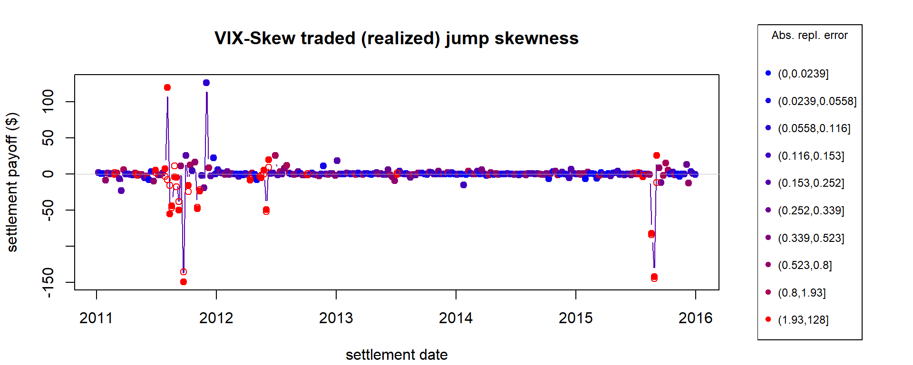

Big Risk

Piotr Orłowski
Paul Schneider
Fabio Trojani
HEC Montréal
USI
Swiss Finance Institute
Université de Genève
Swiss Finance Institute
Core results
First model-free strategy that pays a functional of the path of jumps at settlement
- Dynamic option trading
- Fully non-parametric investigation of jump skew pricing
- Disaggregation of results over arbitrary time periods.
Pricing of jump skew risk:
- Not present in daytime option trading
- Present in overnight option trading
- Persistent.
Core insight
There exists a dynamic option trading strategy whose settlement payoff at maturity equals the cumulative jump skewness of returns.
Motivation
Measurement of jump skew risk
Price and premium for jump skew risk
Empirical results: trading jump skew risk
Motivation – theoretical
Skewness and preferences
- Kraus and Litzenberger (1976), Arditti (1967)
- positive preference for skewness for reasonable utility functions
- with systematic skewness: low returns for positively skewed payoffs.
Jumps and asset pricing
- Barro (2006), Barro and Ursúa (2008)
- rare consumption disasters explain EPP
- Schreindorfer (2014)
- uncertainty shifts generate returns jumps, option smirk
- Segal, Shaliastovich, and Yaron (2015)
- differential impact of positive and negative uncertainty
- Tsai and Wachter (2016)
- systematic boom/disaster risk impacts cross-section
- Harvey and Siddique (2002), Schneider, Wagner, and Zechner (2016)
- conditional skewness explains cross-sectional anomalies.
Motivation – empirical
Tail risk \(\neq\) volatility risk
- Andersen, Todorov, and Fusari (2015), Andersen, Todorov, and Fusari (2016)
- Variation in negative jump risk not spanned by volatility
- Prices of OTM puts (relative to ATM) do not depend on diffusive volatility
- New factor required to describe variation in price of left tail risk.
- Bollerslev and Todorov (2014):
- \(\mathbb{P}\)-measure tail risks evolve over time.
Asymmetric pricing of tail risks
- Andersen, Todorov, and Fusari (2016):
- Prices of negative jump risk can be recovered from prices of deep OTM short-maturity puts.
- Andersen, Todorov, and Fusari (2015):
- The premium for negative jump risk is large, persistent
- Little to no premium for positive jump risk.
Motivation – empirical
Jump risk \(=\) priced risk?
- Kelly and Jiang (2014), Bollerslev, Li, and Todorov (2016):
- Jump risk (of S&P500) priced in cross-section of stock returns.
- \(\alpha = 5.4\%\) p.a. wrt FF3.
- Bollerslev, Li, and Todorov (2016):
- only jump component of S&P500 priced.
Other important facts
- Bollerslev, Todorov, and Xu (2015), Kelly and Jiang (2014):
- Price of jump risk predicts S&P500 returns.
Motivation
Measurement of jump skew risk
Price and premium for jump skew risk
Empirical results: trading jumps kew risk
Measurement of jump skewness
Consider a semi-martingale forward price process:
\[ \frac{dF_t}{F_{t-}} = \mu_{t} dt + \sigma_{t-} dW_t + \int_{\mathbb{R}\setminus \{0\}}( e^x - 1 ) \, \nu_t(dx,dt) \]
Focus on skew of jumps in log-returns:
\[ \int_t^T \int_{\mathbb{R}\setminus \{0\}} \left( x^3 + O(x^4) \right) \, \nu_s(dx,ds) \]
Use divergence-based measures
- Family of realized variation measures defined in Schneider and Trojani (2015),
- Statistical inference for divergence in Khajavi (2017).
Few assumptions
- Trading results do not hinge on semi-martingale world.
Measurement of jump skewness
Realized divergence for \(p=0\):
- realized divergence (\(p\)) \(\approx\) 1/2 realized variance (\(\color{red}{=}\) if no jumps) + \(f(p)\times\) jumps
- consider VIX index; VIX2: price of Itakura and Saito (1968) divergence
- VIX2-based variance swap.
Realized jump skew:
- sensitivity of realized divergence to choice of \(p\).
Take log return:
\[ r_i := \log{F_{t_i}} - \log{F_{t_{i-1}}}. \]
Jump skew variation:
\[ S_{t,T} := \sum_{i=1}^N \left( e^{r_i}-1 -\frac{r_i^2}{2} - r_i \right) \overset{\mathbb{P}}{\longrightarrow} \sum_{t \leq s \leq T} \frac{1}{6} \left(\Delta J_s\right)^3 + O(J_s)^4 \]
Motivation
Measurement of jump skew risk
Price and premium for jump skew risk
Empirical results: trading jumps kew risk
Central question: trading strategy
How to dynamically trade forwards and options so that their settlement payoff equals \(S_{t,T}\)?
Trading strategy
Index option market:
- sparse maturities
- near continuum of strikes.
Non-linear trading:
Exposure to divergence of function of forward price \(\color{green}{\phi}(F_T)\) available through Breeden and Litzenberger (1978) and Carr and Madan (2001): \[ D_{\color{green}{\phi}}(F_T,F_t) := \color{green}{\phi}(F_T) \color{black}- \color{green}{\phi}(F_t) \color{black}- \color{green}{\phi}'(F_t)\color{black}(F_T- F_t) = \int_0^{\infty} \color{green}{\phi}''(K) \color{red}{O(F_T; K, F_t)} \color{black}dK \]
Existing literature: semi-static strategies
\[ D_{\phi}(F_T,F_t) + \sum_i \delta_i (F_T - F_i) \]
Replication of \(S_{t,T}\) not possible with semi-static strategies
There is no \(\phi\) and \(\{\delta\}_{i=1}^{N_T}\) such that \(S_{t,T} = D_{\phi}(F_T,F_t) + \sum_i \delta_i (F_T - F_i)\).
Trading strategy
Express \(S_{t,T}\) as sum of weighted divergences between \(F_{t_i}\) and \(F_T\):
\[ S_{t,T}= \sum_{i=1}^N \left( e^{r_i}-1 -\frac{r_i^2}{2} - r_i \right) = \underbrace{\phi_s(F_T,F_{0})}_{\color{green}{\bigstar}} + \sum_i \underbrace{\gamma_{i}\phi_v(F_T,F_i)}_{\color{purple}{\bigstar}} + \underbrace{\delta_i (F_T - F_i)}_{\color{orange}{\bigstar}}. \]
\(\color{green}{\bigstar}\) at time \(t_0\) buy a skewness swap
\(\color{purple}{\bigstar}\) at time \(t_i > t_0\) trade \(\gamma_i\) variance swaps \(\color{red}//\) \(\color{orange}{\bigstar}\) at time \(t_i > t_0\) trade \(\delta_i\) forwards
Jump skew premium
Semi-static strategies (e.g. variance swaps):
- floating leg — realized variation measure \(\equiv\) fwd + option settlement,
- fixed leg — swap rate — \(\mathbb{E}^{\mathbb{Q}_T}_t[\phi(F_T) - \phi(F_t)]\).
Dynamic strategies:
- replicating leg — weight integrated wrt \(\Delta\) SR — \(\int_t^T \color{orange} \gamma_s \color{black} d \color{blue}\mathbb{E}^{\mathbb{Q}_T}_s[\phi(F_T) - \phi(F_s)]\),
- replication cost now known at \(t\): option rebalancing comes into play.
Jump skew premium
With MGF of log-return \(\varphi_t(p,\tau- t) \equiv \mathbb{E}_t^{\mathbb{Q}}\left[ e^{p\log{F_{\tau}/F_t}} \right]\): \[ \mathbb{E}^{\mathbb{P}}_t[S_{t,T}] - \left[\underbrace{-\frac{1}{2}\varphi''_t(0,T - t) - \varphi'_t(0, T - t)}_{\color{green}{\bigstar}} - \underbrace{\int_t^{T} \color{orange}\log{\frac{F_s}{F_t}}\color{black} d \color{blue} \varphi'_s(0,T - s)}_{\color{purple}{\bigstar}}\right] \]
Hedging exposure to jump skewness exposes trader to volatility/skewness drivers.
Jump skew premium
\[ \mathbb{E}^{\mathbb{P}}_t[S_{t,T}] - \left[\underbrace{-\frac{1}{2}\varphi''_t(0,T - t) - \varphi'_t(0, T - t)}_{\color{green}{\bigstar}} - \underbrace{\int_t^{T} \color{orange} \log{\frac{F_s}{F_t}}\color{black} d \color{blue}\varphi'_s(0,T - s)}_{\color{purple}{\bigstar}}\right] \]
\(\color{purple}{\bigstar}\) \(\color{blue} -\varphi'_s(0,T - s)\) — price of variance swap
\(\color{purple}{\bigstar}\) \(\color{orange} \log{{F_s}/{F_t}}\) — position in variance swap.
If we could trade forwards on VS: this term would have \(\mathbb{Q}_T\)-expectation 0.
We can’t.
Option portfolio rebalancing exposes investors to state variable risk.
Motivation
Measurement of jump skew risk
Price and premium for jump skew risk
Empirical results: trading jump skew risk
CBOE SPX Weeklys

Weeklys:
- \(> 1/3\) of open interest @ CBOE
- significant trading activity since 2011
- quote vs trade data \(\longrightarrow\) data selection
Trading jump skew: weekly

Trading jump skew: settlement payoff
| frequency | \(\mu_b\) | \(\sigma_b\) | \(CI(\mu_b,0.05)\) | \(CI(\mu_b,0.95)\) |
|---|---|---|---|---|
| \(S_{t,T}\) | ||||
| daytime | -1.37 | 32.3 | -3.0 | 1.0 |
| overnight | 1.01 | 69.5 | -3.1 | 4.4 |
| weekly | -1.02 | 18.8 | -2.8 | 1.1 |
Daytime and overnight variation scaled by 5 (days).
- Values of jump skew payoff at option and forward settlement.
- Average jump skew variation is 0 over all periods.
- Positive and negative jumps wash away.
- Consistent with findings in the literaure.
Trading jump skew: profits
| frequency | \(\mu_b\) | \(\sigma_b\) | \(CI(\mu_b,0.05)\) | \(CI(\mu_b,0.95)\) |
|---|---|---|---|---|
| profit | ||||
| daytime | 0.7 | 292.7 | -12.9 | 13.6 |
| overnight | 62.7 | 305.7 | 35.7 | 84.2 |
| weekly | 45.8 | 166.6 | 12.8 | 69.9 |
| profit w/ bid-ask | ||||
| daytime | -95.9 | 369.9 | -127.8 | -52.9 |
| overnight | 1.6 | 259.4 | -12.4 | 15.5 |
| weekly | 4.6 | 202.4 | -11.0 | 27.6 |
Daytime and overnight variation scaled by 5 (days).
Weekly trading significantly profitable before transaction costs (though not after).
Disaggregate results:
- No profits in daytime trading (09:00-14:30)
- Significant profits from holding overnight positions (14:30 - 09:00)
Trading jump skew: replication cost
| frequency | \(\mu_b\) | \(\sigma_b\) | \(CI(\mu_b,0.05)\) | \(CI(\mu_b,0.95)\) |
|---|---|---|---|---|
| rebalancing | ||||
| daytime | 5.1 | 154.1 | -1.7 | 11.1 |
| overnight | 2.9 | 137.4 | -3.8 | 8.8 |
| weekly | 13.4 | 124.1 | -3.7 | 25.7 |
| swap rate | ||||
| daytime | -7.4 | 192.2 | -16.7 | 4.5 |
| overnight | -64.6 | 197.9 | -85.8 | -36.2 |
| weekly | -60.2 | 100.3 | -85.5 | -23.5 |
Daytime and overnight variation scaled by 5 (days).
Two components in replication cost:
- swap rate change from inception to maturity
- rebalancing of position
Negative values = income.
Skewness swap rates change little over the course of the day. (OTM put prices change little).
Most change cumulated in overnight periods.
Trading jump skew: after jumps
Recall: negative jumps persistently increase price of OTM puts. (Andersen, Todorov, and Fusari (2015))
Overnight trading profits increase after jump events.
- Overnight trade = sell puts, buy calls, reverse next morning
- no rebalancing
Positive jumps also seem to impact put prices.

Summary
First model-free strategy that pays a functional of the path of jumps at settlement
- Dynamic option trading
- Fully non-parametric investigation of jump skew pricing
- Disaggregation of results over arbitrary time periods.d
Pricing of jump skew risk:
- Not present in daytime option trading
- Present in overnight option trading
- Persistent.
Conclusions
Compensation for holding downside tail risk in overnight periods
- hedging frictions due to illiqudity?
- who is exposed (broker-dealers)?
No evidence about daytime jump compensation
- high variance of estimates
- small significant profits in robust analysis.
Future research
- bi-daily skewness/variance swaps possible with new CBOE products
References
Andersen, Torben, Viktor Todorov, and Nicola Fusari. 2015. “The Risk Premia Embedded in Index Options.” Journal of Financial Economics Forthcoming.
———. 2016. “The Pricing of Short-Term Market Risk: Evidence from Weekly Options.” Journal of Finance.
Arditti, Fred D. 1967. “RISK and the Required Return on Equity.” The Journal of Finance 22 (1): 19–36. doi:10.1111/j.1540-6261.1967.tb01651.x.
Barro, Robert J. 2006. “Rare Disasters and Asset Markets in the Twentieth Century.” The Quarterly Journal of Economics 121 (3). Oxford University Press: pp. 823–66.
Barro, Robert J., and Jose F. Ursúa. 2008. “Macroeconomic Crises since 1870.” Brookings Papers on Economic Activity 39 (1 (Spring): 255–350. https://ideas.repec.org/a/bin/bpeajo/v39y2008i2008-01p255-350.html.
Bollerslev, Tim, and Viktor Todorov. 2014. “Time-Varying Jump Tails.” Journal of Econometrics 183 (2): 168–80. doi:http://dx.doi.org/10.1016/j.jeconom.2014.05.007.
Bollerslev, Tim, Sophia Zhengzi Li, and Viktor Todorov. 2016. “Roughing up Beta: Continuous Versus Discontinuous Betas and the Cross Section of Expected Stock Returns.” Journal of Financial Economics 120 (3): 464–90.
Bollerslev, Tim, Viktor Todorov, and Lai Xu. 2015. “Tail Risk Premia and Return Predictability.” Journal of Financial Economics 118 (1): 113–34.
Breeden, Douglas T., and Robert H. Litzenberger. 1978. “Prices of State-Contingent Claims Implicit in Option Prices.” The Journal of Bussiness 51 (4): 621–51.
Carr, Peter, and Dilip Madan. 2001. “Optimal Positioning in Derivative Securities.” Quantitative Finance. Taylor; Francis.
Harvey, Campbell R., and Akhtar Siddique. 2002. “Conditional Skewness in Asset Pricing Tests.” The Journal of Finance 55 (3): 1263–95. doi:10.1111/0022-1082.00247.
Itakura, F., and S. Saito. 1968. “Analysis Synthesis Telephony Based on the Maximum Likelihood Method.” In Proceedings of the 6th International Congress on Acoustics, 17:C17–C20. IEEE.
Kelly, Bryan, and Hao Jiang. 2014. “Tail risk and asset prices.” Review of Financial Studies 27 (10): 2841–71. doi:10.1093/rfs/hhu039.
Khajavi, Ali Noori. 2017. “The Econometrics of Realized Divergence.” PhD thesis, Università Bocconi.
Kraus, Alan, and Robert H. Litzenberger. 1976. “SKEWNESS Preference and the Valuation of Risk Assets*.” The Journal of Finance 31 (4): 1085–1100. doi:10.1111/j.1540-6261.1976.tb01961.x.
Schneider, Paul, and Fabio Trojani. 2015. “Divergence and the Price of Uncertainty.”
Schneider, Paul, Christian Wagner, and Josef Zechner. 2016. “Low Risk Anomalies?” CFS Working Paper Series 550. Center for Financial Studies (CFS). https://EconPapers.repec.org/RePEc:zbw:cfswop:550.
Schreindorfer, David. 2014. “Tails, Fears, and Equilibrium Option Prices.” Available at SSRN: https://ssrn.com/abstract=2358157.
Segal, Gill, Ivan Shaliastovich, and Amir Yaron. 2015. “Good and Bad Uncertainty: Macroeconomic and Financial Market Implications.” Journal of Financial Economics 117 (2): 369–97.
Tsai, Jerry, and Jessica A. Wachter. 2016. “Rare Booms and Disasters in a Multisector Endowment Economy.” In Review of Financial Studies, 29:1113–69. 5. doi:10.1093/rfs/hhv074.